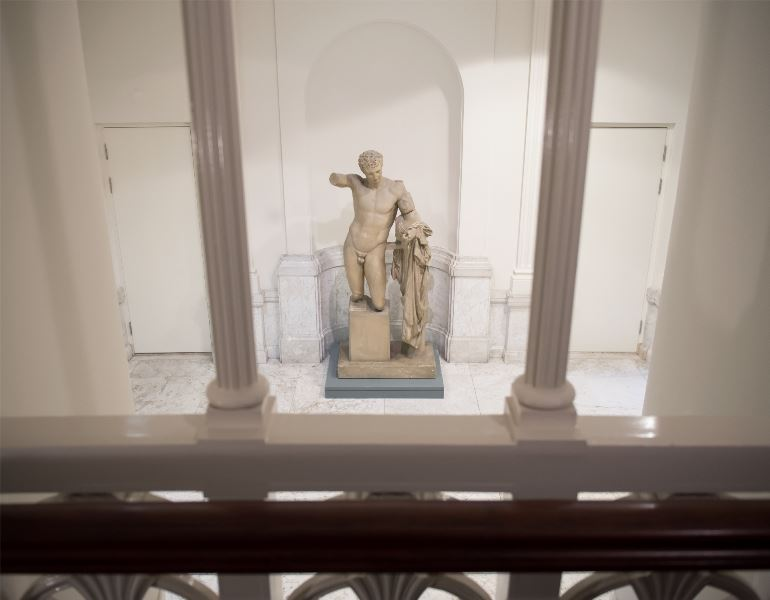

Allard Pierson
Oude Turfmarkt 127, 1012 GC
NavigerenHet Allard Pierson is een plek waar cultureel erfgoed van over de hele wereld centraal staat. Het museum en kennisinstituut is onderdeel van de bibliotheek van de UvA, waardoor er ontzettend veel kennis en archiefstukken zijn. Van tentoonstellingen over de Egyptische oudheid tot klassieke atlassen en grafische vormgeving van nu; hier komen wetenschap, erfgoed en publiek samen in het hart van de stad.
VASTE COLLECTIE
Van Nijl tot Amstel
Iedereen weet dat culturen zich vermengen, maar waar kun je dat aan zien? In deze steeds verder uitbreidende tentoonstelling zie je de kruisbestuiving van tijden en streken. Van het ontstaan van het schrift tot de eerste industriële boekproductie. Van handelaren uit het Assyrische Rijk tot theatermakers in Amsterdam.
FACILITEITEN
Rolstoeltoegankelijk